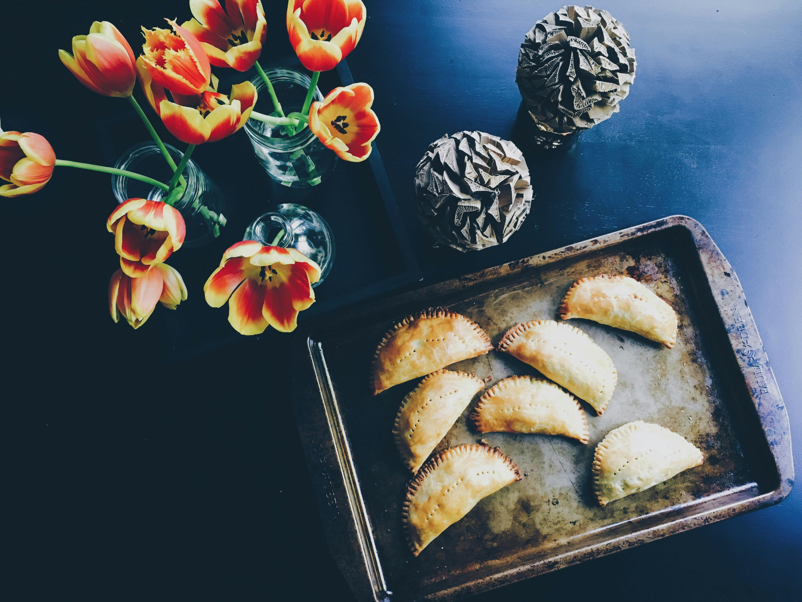
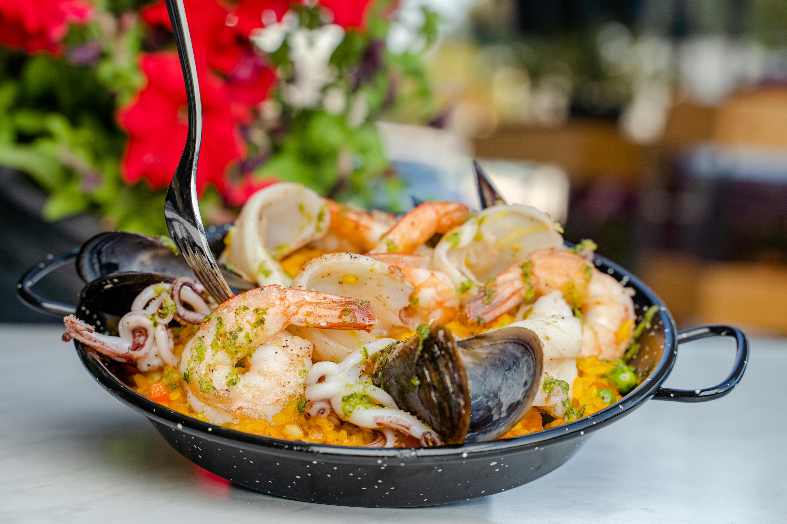
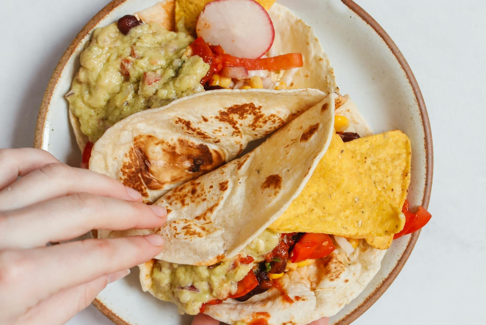
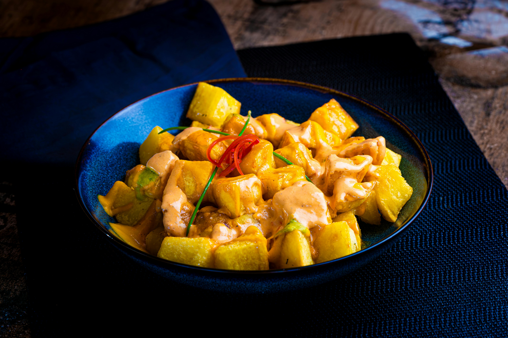
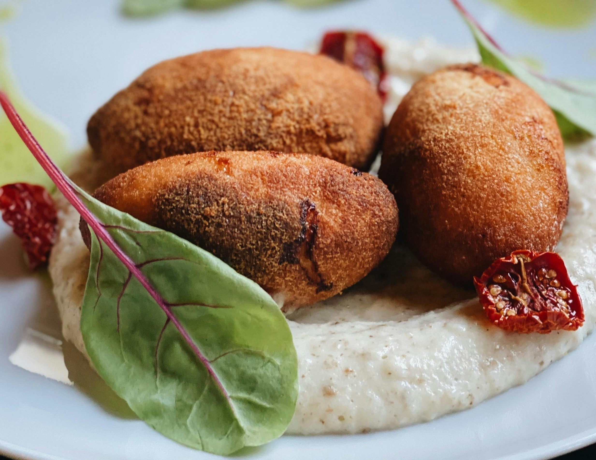
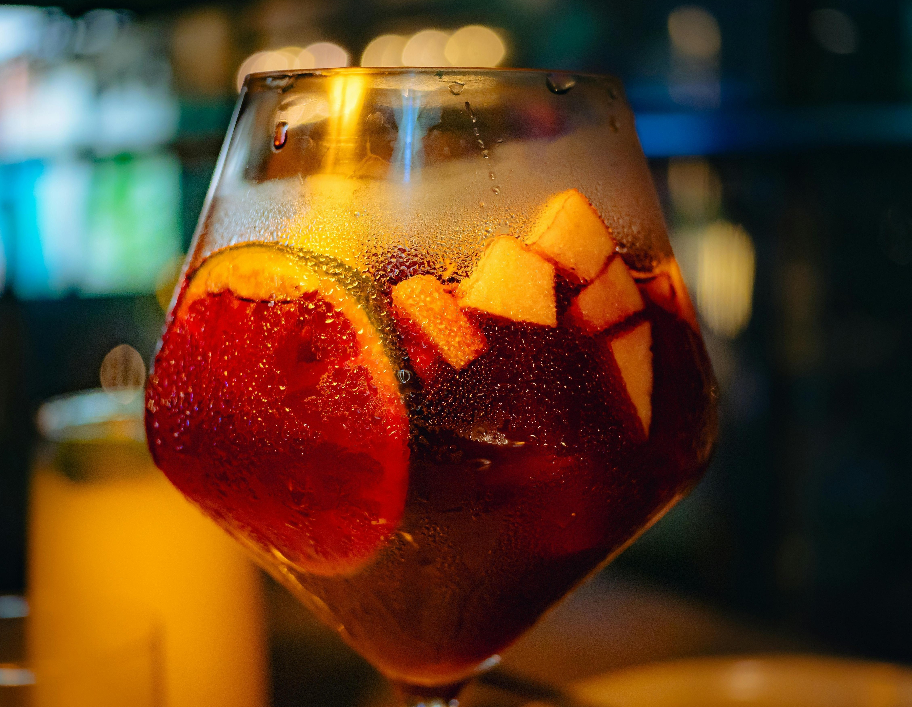
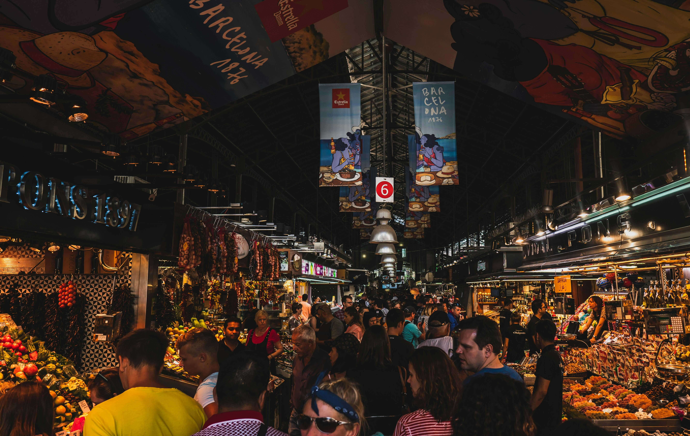

Savor the Flavors of Spain
Discover the rich culinary traditions that make Spanish cuisine world-renowned, from sizzling paella to flavorful tapas.

The Flavors of Spain
Spanish cuisine varies by region but shares a love for fresh ingredients, olive oil, and communal dining.
Paella
- Paella is one of Spain’s most iconic dishes, originating from the coastal region of Valencia. This flavorful rice dish is traditionally cooked in a wide, shallow pan, allowing the rice to develop a crispy, golden crust known as socarrat. The key ingredient is saffron, which gives the dish its signature golden hue and distinct aroma. Paella can be prepared in various styles, with the most popular being seafood paella, featuring shrimp, mussels, and squid, or paella Valenciana, which includes rabbit, chicken, and green beans. This beloved dish embodies the essence of Spanish cuisine, bringing together fresh, local ingredients and a tradition of communal dining.

Tortilla Española
- Tortilla Española serves as one of Spain's classic dishes along with its common name of Spanish omelet. Traditional Spanish cooking transforms ordinary eggs, potatoes, onions, olive oil and salt into the delightful Tortilla Española. Fried potatoes and onions in olive oil reach tenderness before combining with beaten eggs to create a thick omelet which becomes golden brown. Diners enjoy Tortilla Española either warm or at room temperature at tapas bars since this dish functions as both a snack and appetizer and light meal. Spanish people love this dish because its robust taste and thick body characteristics turn it into nationwide comfort food.

Patatas Bravas
- Patatas Bravas serves as Spain’s signature tapas dish through its crispy potatoes which get served with a tangy spicy tomato sauce. Potato chunks are prepared by frying them until they develop crispy outside layers with tender interiors before being served with a tomato sauce containing paprika and a slight spiciness. Local patrons use alioli as an additional topping to Patatas Bravas because it combines creamy mayo with garlic flavor which cools down the spicy tomato sauce. Simple and bold Patatas Bravas serves as a signature tapas dish in Spanish bars across the country to deliver an exemplary Spanish dining experience.

croquettes
- Croquetas (Croquettes) are a beloved Spanish tapa, known for their crispy golden crust and creamy, flavorful filling. These bite-sized delights are made by blending a rich béchamel sauce with ingredients like ham (jamón), chicken, cod (bacalao), or mushrooms, then coating them in breadcrumbs and frying them to perfection. The result is a crunchy exterior with a smooth, velvety interior, making them an irresistible snack or appetizer. Found in tapas bars across Spain, croquetas showcase the country's love for comfort food with a gourmet touch.

Sangria
- Spanish Sangría stands out as a refreshing beverage that works best during festival occasions and warm climates. A combination of red or white wine with fresh oranges and lemons and apples creates the base of sangría which receives additional depth with brandy or orange liqueur. The traditional drink receives its vibrant touch from mixed sparkling water or soda to create an effervescent version. The wine receives natural sweetness from its fruit components which results in a smooth flavorful Spanish drink that captures the energetic Spanish spirit.

Horchata
- Traditional Spanish beverage Horchata derives its creation from three primary components which consist of tiger nuts (chufa) and water and sugar. The traditional Valencia drink emerges from local origins while providing smooth mouthfeel combined with sweet nutty flavor. Mains consumers enjoy this beverage at cold temperatures because it is a preferred summer drink in Spain. Two popular variations of the beverage add either cinnamon or lemon zest as flavorful components. The combination of tiger nuts with water and sugar renders horchata a drink that provides essential nutrients while being free of dairy.
Regional Specialties
Spanish Market
